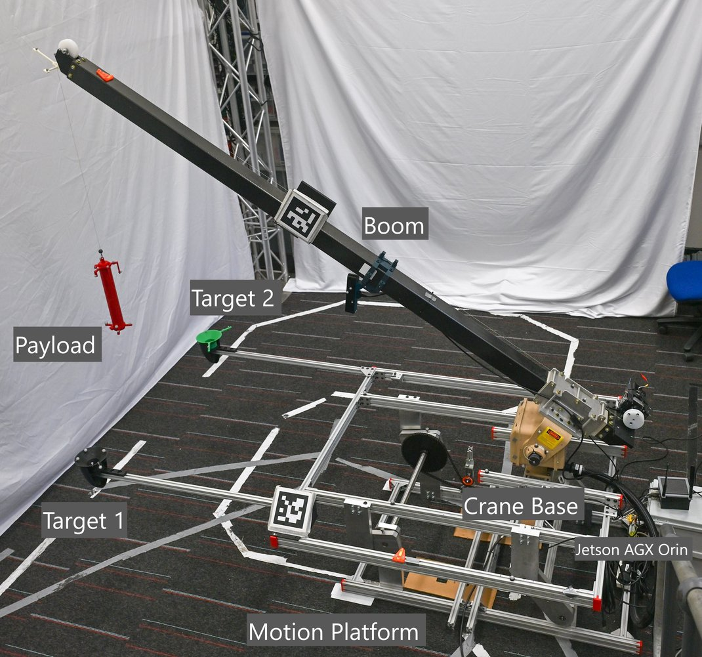
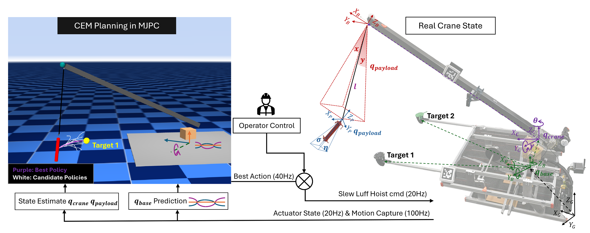

Sampling-based predictive control that plans over the full nonlinear double-pendulum dynamics — no linearization, no offline training — running in real time on embedded hardware.
1Imperial College London
Abstract
Transferring heavy payloads in shipboard settings relies on efficient crane operation, limited by hazardous double-pendulum payload sway that wind and ocean-wave perturbations amplify. Existing control methods struggle in such settings: analytical MPC relies on linearized or reduced-order models, while reinforcement learning requires extensive offline training and cannot adapt once deployed.
We present a complete real-time control pipeline centered on the MuJoCo MPC framework, using a cross-entropy method planner to evaluate candidate action sequences directly through simulation rollouts. This sampling-based approach reconciles the competing objectives of dynamic target tracking and payload sway damping without an analytical model. The controller runs effectively on embedded hardware, achieves significantly lower position error than PID and RL baselines across all conditions while remaining competitive on sway damping, and degrades gracefully under unmodeled physical discrepancies such as an added second payload.
Contributions
An alternative to analytical-model MPC that plans directly over the full double-pendulum dynamics via physics-engine rollouts — sidestepping linearization, DoF reduction, and planner–stabilizer decomposition.
An adaptive cost function that reconciles fast payload transfer with sway damping, validated on a physical crane against PID and RL baselines across four emulated sea states.
An analysis of the trade-off between CEM iteration budget and planning frequency for real-time deployment on compute-constrained embedded hardware.
A robustness study under an unmodeled second payload (+74% mass, a new triple-pendulum mode), showing graceful degradation through constant replanning.
How it works

No MuJoCo model with calibrated actuator dynamics existed for this proprietary crane, so we built one — the foundation the whole pipeline plans over. The three actuated joints are modeled as velocity actuators with gain Kv and rotor-inertia armature Iarm, tuned in two stages: Kv to match the commanded steady-state velocity, then Iarm to match the transient response during acceleration and deceleration. We validate the identified parameters against measured crane trajectories over the full excitation sequence.
| Joint | Kv | Iarm | Damping | RMSE |
|---|---|---|---|---|
| Slew | 7800 | 1000 | 0.01 | 1.5×10⁻³ rad |
| Luff | 13000 | 2200 | 0.01 | 9.5×10⁻⁵ rad |
| Hoist | 25000 | 3200 | 0.0 | 1.1×10⁻² m |
With that model in hand, control becomes planning by simulation. At each cycle, candidate action sequences are sampled, rolled forward through MuJoCo over the full coupled dynamics, and the best-performing sequence is executed on the crane — no linearization, no degree-of-freedom reduction, no offline training.

Method at a glance
A distance-dependent blend shifts emphasis from reaching the target to settling gently, resolving two objectives that otherwise conflict.
Predicted ship motion drives the base inside the rollouts, so the planner anticipates how the payload will swing — not just react.
Five warm-started iterations per cycle damp the sway while keeping the planner faster than the 20 Hz control loop, even on a Jetson.
Results
Median position error over the station-keeping interval, across four motion-platform speeds. MJPC achieves the lowest position error in every condition and damps sway better than the baselines as the seas get rougher.
| Method | Static | Slow | Medium | Fast |
|---|---|---|---|---|
| RL | 0.27 | 0.39 | 0.47 | 0.43 |
| PID | 0.08 | 0.22 | 0.16 | 0.20 |
| MJPC (ours) | 0.03 | 0.09 | 0.11 | 0.11 |
| MJPC [edge] (ours) | 0.03 | 0.06 | 0.07 | 0.10 |
We hung an extra payload beneath the first — adding 74% more mass and turning it into a triple pendulum, a dynamic the MuJoCo model was never given. The reinforcement learning policy, trained on the original payload, couldn't cope. Our controller degraded gracefully: because it re-plans from the real state every cycle, it kept correcting even for dynamics it had never seen.
| Method | Static | Slow | Medium | Fast |
|---|---|---|---|---|
| RL Δ | +0.42 | +0.35 | −0.04 | +0.48 |
| PID Δ | +0.11 | +0.06 | +0.15 | +0.13 |
| MJPC [edge] Δ (ours) | +0.03 | +0.17 | +0.23 | +0.16 |
Cite
@article{crane_mjpc_2026,
title = {Onboard MuJoCo-based Model Predictive Control for
Shipboard Crane with Double-Pendulum Sway Suppression},
author = {Author One and Author Two and Author Three},
journal = {arXiv preprint arXiv:2603.16407},
year = {2026},
url = {https://arxiv.org/abs/2603.16407}
}